Telaio a Nodi Spostabili: Maglie di Forma Qualsiasi
G.Piluso Febbraio - 2004
Vengono assunti positivi:
1 - gli spostamenti verticali verso l'alto;
2 - gli spostamenti orizzontali verso sinistra;
3 - le rotazioni orarie;
4 - i carichi verticali verso il basso;
5 - i carichi orizzontali verso destra;
5 - le coppie antiorarie;
L'esempio e la teoria è stata tratta dal libro di M.Capurso "Introduzione al Calcolo Automatico delle Strutture" - Edizioni Scientifiche A.Cremonese - Roma - Ristampa 1981.
>
restart:
with(linalg):
with(plots):
with(plottools):
>
NI:=16: # Numero delle Incognite
NT:=8: # Numero delle Aste
x1:=array(1..NT): y1:=array(1..NT):
x2:=array(1..NT): y2:=array(1..NT):
L:=array(1..NT):
E:=array(1..NT):
J:=array(1..NT):
Ar:=array(1..NT):
p:=array(1..NT):
q:=array(1..NT):
N:=array(1..NT,1..6):
k:=array(1..6,1..6):
kk:=array(1..6,1..6):
V:=array(1..6,1..6):
omega:=array(1..6,1..6):
so:=array(1..6):
sso:=array(1..6):
ro:=array(1..6):
r1:=array(1..6):
Uo:=array(1..6):
Sol:=array(1..6):
yo:=array(1..NI):
X:=array(1..NI):
A:=array(1..NI,1..NI):
B:=array(1..NI,1..NI):
Matrice di Rigidezza della Trave Generica
>
# colonna 1
k[1,1]:=4*E[t]*J[t]/L[t]:
k[2,1]:=-6*E[t]*J[t]/L[t]^2:
k[3,1]:=0:
k[4,1]:=2*E[t]*J[t]/L[t]:
k[5,1]:=6*E[t]*J[t]/L[t]^2:
k[6,1]:=0:
# colonna 2
k[1,2]:=-6*E[t]*J[t]/L[t]^2:
k[2,2]:=12*E[t]*J[t]/L[t]^3:
k[3,2]:=0:
k[4,2]:=-6*E[t]*J[t]/L[t]^2:
k[5,2]:=-12*E[t]*J[t]/L[t]^3:
k[6,2]:=0:
# colonna 3
k[1,3]:=0:
k[2,3]:=0:
k[3,3]:=E[t]*Ar[t]/L[t]:
k[4,3]:=0:
k[5,3]:=0:
k[6,3]:=-E[t]*Ar[t]/L[t]:
# colonna 4
k[1,4]:=2*E[t]*J[t]/L[t]:
k[2,4]:=-6*E[t]*J[t]/L[t]^2:
k[3,4]:=0:
k[4,4]:=4*E[t]*J[t]/L[t]:
k[5,4]:=6*E[t]*J[t]/L[t]^2:
k[6,4]:=0:
# colonna 5
k[1,5]:=6*E[t]*J[t]/L[t]^2:
k[2,5]:=-12*E[t]*J[t]/L[t]^3:
k[3,5]:=0:
k[4,5]:=6*E[t]*J[t]/L[t]^2:
k[5,5]:=12*E[t]*J[t]/L[t]^3:
k[6,5]:=0:
# colonna 6
k[1,6]:=0:
k[2,6]:=0:
k[3,6]:=-E[t]*Ar[t]/L[t]:
k[4,6]:=0:
k[5,6]:=0:
k[6,6]:=E[t]*Ar[t]/L[t]:
# colonna 1
omega[1,1]:=1:
omega[2,1]:=0:
omega[3,1]:=0:
omega[4,1]:=0:
omega[5,1]:=0:
omega[6,1]:=0:
# colonna 2
omega[1,2]:=0:
omega[2,2]:=(x2[t]-x1[t])/L[t]:
omega[3,2]:=(y2[t]-y1[t])/L[t]:
omega[4,2]:=0:
omega[5,2]:=0:
omega[6,2]:=0:
# colonna 3
omega[1,3]:=0:
omega[2,3]:=-(y2[t]-y1[t])/L[t]:
omega[3,3]:=(x2[t]-x1[t])/L[t]:
omega[4,3]:=0:
omega[5,3]:=0:
omega[6,3]:=0:
# colonna 4
omega[1,4]:=0:
omega[2,4]:=0:
omega[3,4]:=0:
omega[4,4]:=1:
omega[5,4]:=0:
omega[6,4]:=0:
# colonna 5
omega[1,5]:=0:
omega[2,5]:=0:
omega[3,5]:=0:
omega[4,5]:=0:
omega[5,5]:=(x2[t]-x1[t])/L[t]:
omega[6,5]:=(y2[t]-y1[t])/L[t]:
# colonna 6
omega[1,6]:=0:
omega[2,6]:=0:
omega[3,6]:=0:
omega[4,6]:=0:
omega[5,6]:=-(y2[t]-y1[t])/L[t]:
omega[6,6]:=(x2[t]-x1[t])/L[t]:
# reazioni d'incastro perfetto perpendicolari
so[1]:=-p[t]*L[t]^2/12:
so[2]:=p[t]*L[t]/2:
so[3]:=0:
so[4]:=p[t]*L[t]^2/12:
so[5]:=p[t]*L[t]/2:
so[6]:=0:
# reazioni d'incastro perfetto paralleli
sso[1]:=0:
sso[2]:=0:
sso[3]:=q[t]*L[t]/2:
sso[4]:=0:
sso[5]:=0:
sso[6]:=q[t]*L[t]/2:
Dati (M.Capurso pag.238 fig.9)
>
# Coordinate delle Aste
x1[1]:=0: y1[1]:=0: x2[1]:=0: y2[1]:=900:
x1[2]:=0: y1[2]:=900: x2[2]:=300: y2[2]:=1100:
x1[3]:=300: y1[3]:=1100: x2[3]:=600: y2[3]:=900:
x1[4]:=600: y1[4]:=0: x2[4]:=600: y2[4]:=900:
x1[5]:=600: y1[5]:=900: x2[5]:=600: y2[5]:=1700:
x1[6]:=600: y1[6]:=1700: x2[6]:=1200: y2[6]:=2000:
x1[7]:=1200: y1[7]:=2000: x2[7]:=1800: y2[7]:=1700:
x1[8]:=1800: y1[8]:=0: x2[8]:=1800: y2[8]:=1700:
# Lunghezze delle Aste
for t from 1 to NT do
L[t]:=sqrt((x2[t]-x1[t])^2+(y2[t]-y1[t])^2);
end do:
Ar[1]:=40*50.0:
Ar[2]:=30*80.0:
Ar[3]:=30*80.0:
Ar[4]:=50*70.0:
Ar[5]:=40*55.0:
Ar[6]:=40*120.0:
Ar[7]:=40*120.0:
Ar[8]:=20*70.0:
# Momenti di Inerzia delle Aste
J[1]:=40.0*50.0^3/12:
J[2]:=30.0*80.0^3/12:
J[3]:=30.0*80.0^3/12:
J[4]:=50.0*70.0^3/12:
J[5]:=40.0*55.0^3/12:
J[6]:=40.0*120.0^3/12:
J[7]:=40.0*120.0^3/12:
J[8]:=20.0*70.0^3/12:
# Moduli di Elasticità delle Aste
E[1]:=300000.0:
E[2]:=300000.0:
E[3]:=300000.0:
E[4]:=300000.0:
E[5]:=300000.0:
E[6]:=300000.0:
E[7]:=300000.0:
E[8]:=300000.0:
# Carichi Perpendicolari Distribuiti sulle Aste
p[1]:=0.0:
p[2]:=21.9:
p[3]:=21.9:
p[4]:=0.0:
p[5]:=0.0:
p[6]:=29.0:
p[7]:=29.0:
p[8]:=0.0:
# Carichi Paralleli Distribuiti sulle Aste
q[1]:=0.0:
q[2]:=14.5:
q[3]:=-14.5:
q[4]:=0.0:
q[5]:=0.0:
q[6]:=14.5:
q[7]:=-14.5:
q[8]:=0.0:
# Coppie e Forze Concentrate nei Nodi della Struttura
yo[1]:=0.0:
yo[2]:=0.0:
yo[3]:=0.0:
yo[4]:=0.0:
yo[5]:=0.0:
yo[6]:=0.0:
yo[7]:=0.0:
yo[8]:=0.0:
yo[9]:=0.0:
yo[10]:=0.0:
yo[11]:=0.0:
yo[12]:=0.0:
yo[13]:=0.0:
yo[14]:=0.0:
yo[15]:=0.0:
yo[16]:=0.0:
# Parametri di Spostamento Nodale
N:=[
[0,0,0,1,2,3],
[1,2,3,4,5,6],
[4,5,6,7,8,9],
[0,0,0,7,8,9],
[7,8,9,10,11,12],
[10,11,12,13,14,15],
[13,14,15,0,16,0],
[0,0,0,0,16,0]
]:
Azzero la Matrice ed i Vettori
>
for i from 1 to 6 do
Sol[i]:=0.0;
end do:
for i from 1 to NI do
for j from 1 to NI do
A[i,j]:=0.0:
end do:
end do:
Costruzione della Matrice A e del Vettore yo
>
for t from 1 to NT do
evalm(k):
evalm(omega):
kk:=evalm(transpose(omega) &* (k &* omega)):
for i from 1 to 6 do
R:=N[t,i]:
for j from 1 to 6 do
S:=N[t,j]:
if R <> 0 and S <> 0 then
A[R,S]:=evalf(A[R,S])+evalf(kk[i,j]):
end if:
end do:
end do:
end do:
evalm(A):
for t from 1 to NT do
evalm(omega):
evalm(so):
evalm(sso):
ro:=evalm(transpose(omega) &* so):
r1:=evalm(transpose(omega) &* sso):
for i from 1 to 6 do
R:=N[t,i]:
if R <> 0 then
yo[R]:=evalf(yo[R]) + evalf(ro[i]):
end if;
end do:
evalm(yo):
for i from 1 to 6 do
R:=N[t,i]:
if R <> 0 then
yo[R]:=evalf(yo[R]) + evalf(r1[i]):
end if;
end do:
end do:
evalm(yo):
Soluzione: Rotazioni e Spostamenti
>
B:=inverse(A):
X:=evalm(B&*(-yo));
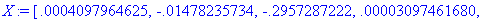
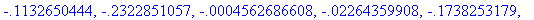
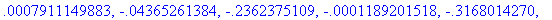
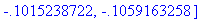
Soluzione: Momenti e Tagli
>
for t from 1 to NT do
for i from 1 to 6 do
R:=N[t,i]:
Uo[i]:=0.0:
if R <> 0 then
Uo[i]:=X[R]:
end if:
end do:
evalf(evalm(omega)):
kk:=evalm(transpose(omega) &* (k &* omega)):
Sol:=evalm(kk &* Uo):
Sol:=evalm(omega &* Sol):
for i from 1 to 6 do
Sol[i]:=evalf(Sol[i]+so[i]+sso[i]):
end do:
print('Asta ' - t, Sol);
end do:
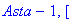
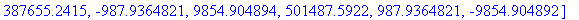
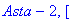
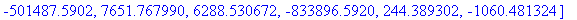
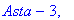
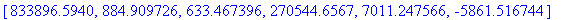
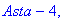
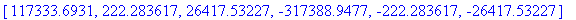
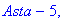
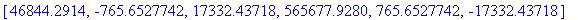
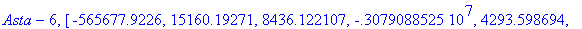
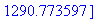
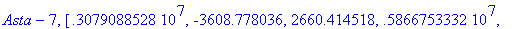
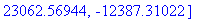
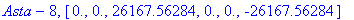
Schema della Struttura
>
for t from 1 to NT do
linea[t]:=line([x1[t],y1[t]],[x2[t],y2[t]],color=red):
end do:
plots[display](seq(linea[t],t=1..NT),axes=none);
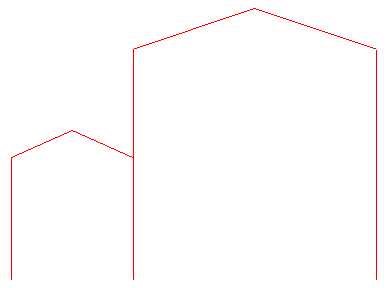